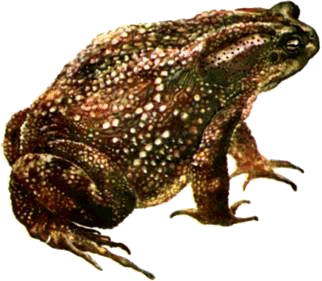

Внешний вид. Самый крупный вид в группе серых жаб: максимальная длина тела до 170 мм. Кожа покрыта крупными гладковатыми буграми; шипики могут быть выражены на голове, по бокам или на нижней стороне тела. Сочленовные бугорки на пальцах двойные. Сверху чаще всего серого или коричневого цвета (от светлого до темного), с темными пятнами. Темная полоса на паротидах имеется, но может состоять из ряда пятен, а иногда отсутствует:
Брюхо желтоватое, с темными пятнами или без них. Молодые особи могут иметь оранжевую окраску с ярко-желтыми паротидами.
Резонаторов у самцов нет. Самцы мельче самок и достигают максимальной длины в 120 мм.
Распространение. Преимущественно кавказский вид. На Кавказе распространен в Краснодарском и Ставропольском краях России, в Грузии и Азербайджане. Основная часть ареала сосредоточена на западе Кавказа; на востоке состоит из изолированных участков (Лагодехи-Закаталы, Ленкоранский и Сабирабадский районы). Вне бывшего СССР вид известен из северо-восточной Турции и северного Ирана (провинции Гилян и Мазендеран).
Систематика вида. Ранее кавказская жаба считалась подвидом серой жабы. В последнее десятилетие рядом отечественных исследователей рассматривается как самостоятельный вид, входящий в группу серых жаб. Взаимоотношения с серыми жабами Средиземноморья не выяснены.
На западе Кавказа предложено различать 3 подвида. Номинативный подвид Bufo verrucosissimus verrucosissimus (Pallas, 1814) занимает западную часть Закавказья и заходит на северный склон Главного Кавказского хребта по долине реки Белая. Ареал жабы Турова, Bufo verrucosissimus turowi Krassovsky, 1933, ограничен неширокой предгорной полосой (на высоте 600-1000 м над уровнем моря) в Краснодарском крае на северной стороне Большого Кавказа (между слиянием рек Уруштен и Малая Лаба до горы Ятыргварта). Черкесская жаба, Bufo verrucosissimus circassicus Orlova et Tuniyev, 1989 также распространена в Краснодарском крае на северном склоне Большого Кавказа от станицы Крепостная до Геленджика на черноморском побережье. Обоснованность этих подвидов, описанных без учета изменчивости всего вида, нуждается в подтверждении.
Местообитания. Кавказская жаба — житель лесной зоны. Встречается как на равнине, так и в горах, на высоте от уровня моря до 1900 м (верхняя граница леса). Обитает в широколиственных, смешанных и хвойных лесах, кустарниковых зарослях, садах, на лугах и в огородах, около чайных плантаций на заболоченных участках и в арыках; нередко попадается в населенных пунктах.
Активность. Активность обычно сумеречно-ночная. Животные появляются вскоре после захода солнца. В период размножения жабы активны круглые сутки. Наибольшая активность наблюдается вечером и на рассвете. Днем животные прячутся в укрытиях под камнями, валежником, корнями деревьев, стогами сена, в неглубоких норах, гнилых пнях. Отмечены также необычные убежища в дуплах, которые располагаются на наклонных стволах деревьев, иногда на высоте 1,5-2,0 м. Жабы привязаны к своим убежищам, регулярно возвращаясь к ним после ночных походов. В густых зарослях травы, защищающих от прямых лучей солнца, и в пасмурную погоду жабы могут попадаться и днем во время охоты за добычей.
Размножение. Весной они появляются на равнине и в предгорьях во второй половине марта — начале апреля, в горах в апреле — начале мая, при температуре воздуха и воды 5-6°С и почвы 9°С.
Период размножения на равнине занимает около 10 суток, в горных районах растянут и затягивается до августа. В качестве мест размножения жабы используют водоемы со слабым течением, родники, тихие и неглубокие заводи горных ручьев, мелкие и небольшие по размерам пруды и озерца, в том числе искусственные рыборазводные пруды до 1 м глубиной. Жабы могут менять места размножения. Известны случаи, когда самки, помеченные на одном водоеме, на следующий год оказывались в другом на расстоянии до 2 км.
Самцы могут выбирать самок и образовывать с ними пары как на суше, так и в воде. Нерест происходит при температуре воды около 5-13°С. Икра откладывается, как правило, ночью в виде шнура длиной от 3 до 15,4 м и толщиной всего лишь 8 мм. Шнуры обволакивают камни, подводные части травянистых растений, лежащие в воде ветки, сучки и т.д.
Ссылка на сайт: http://www.ecosystema.ru/08nature/amf/20.htm